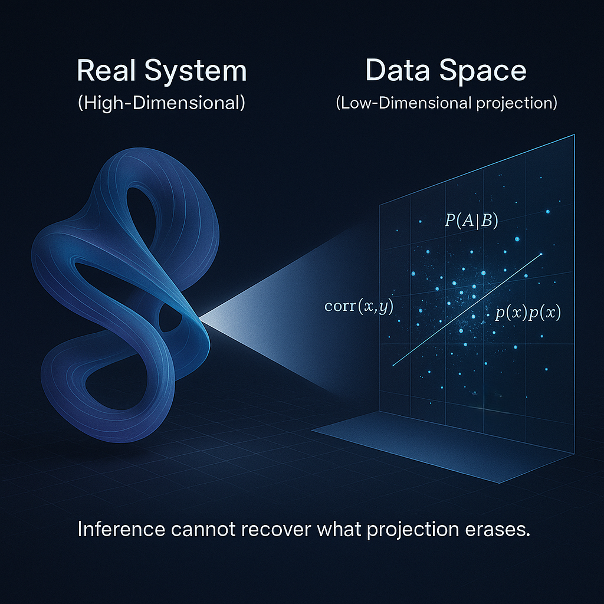
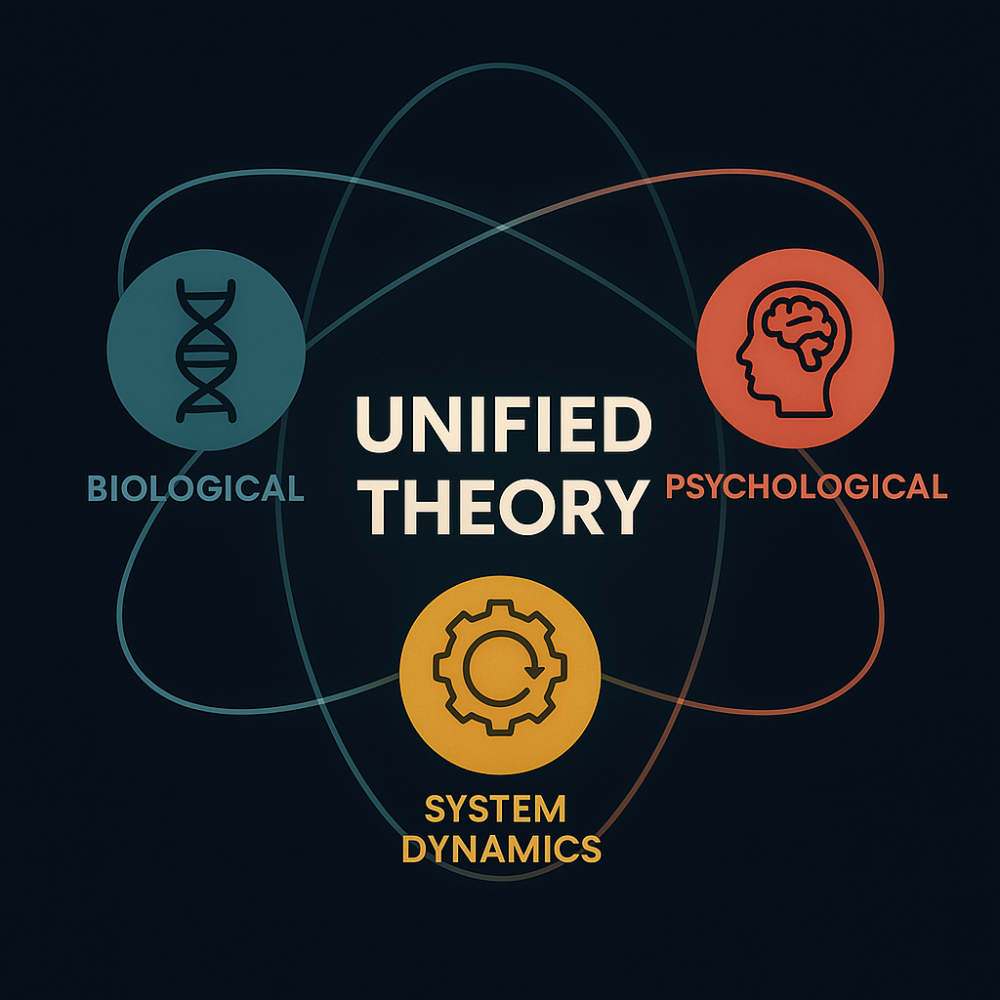
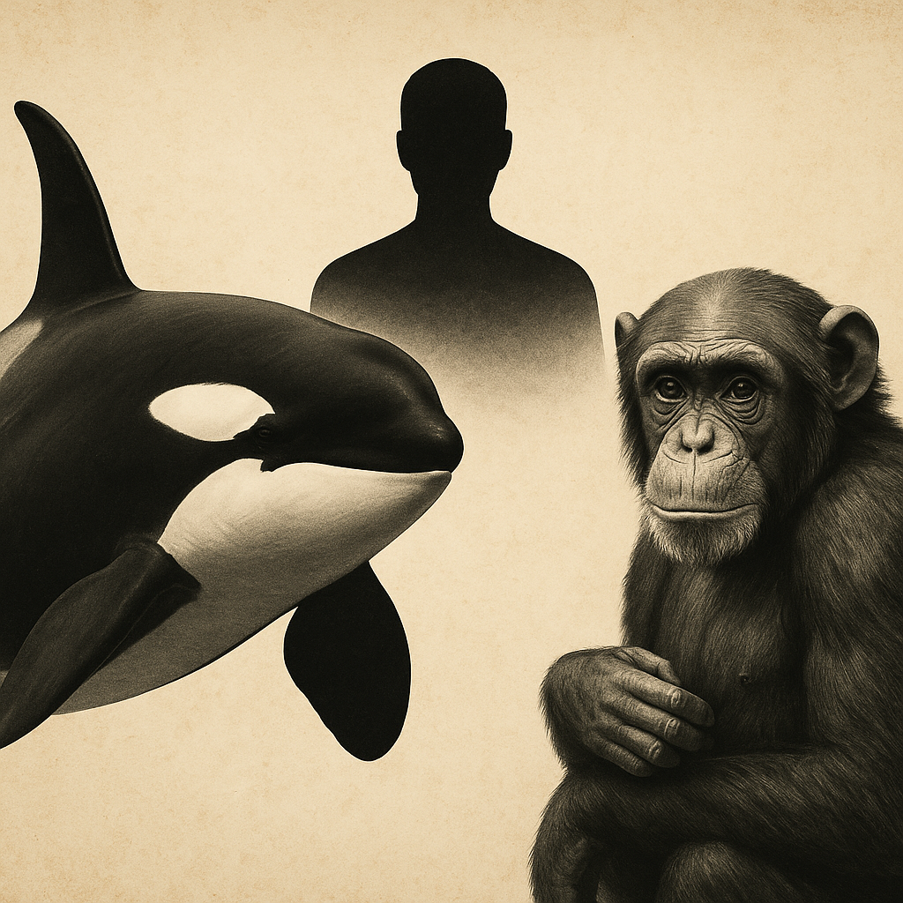
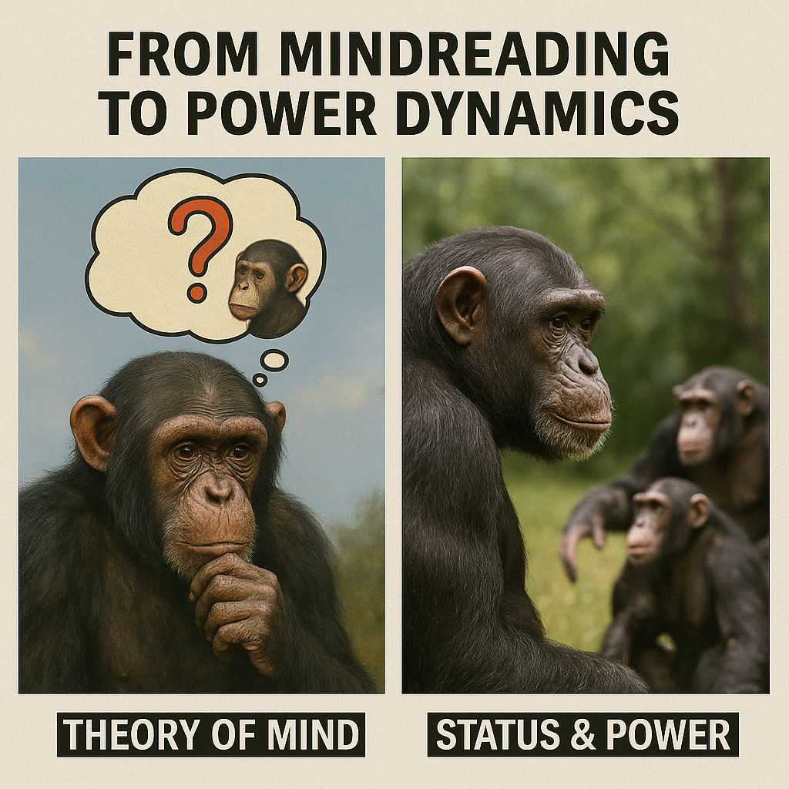
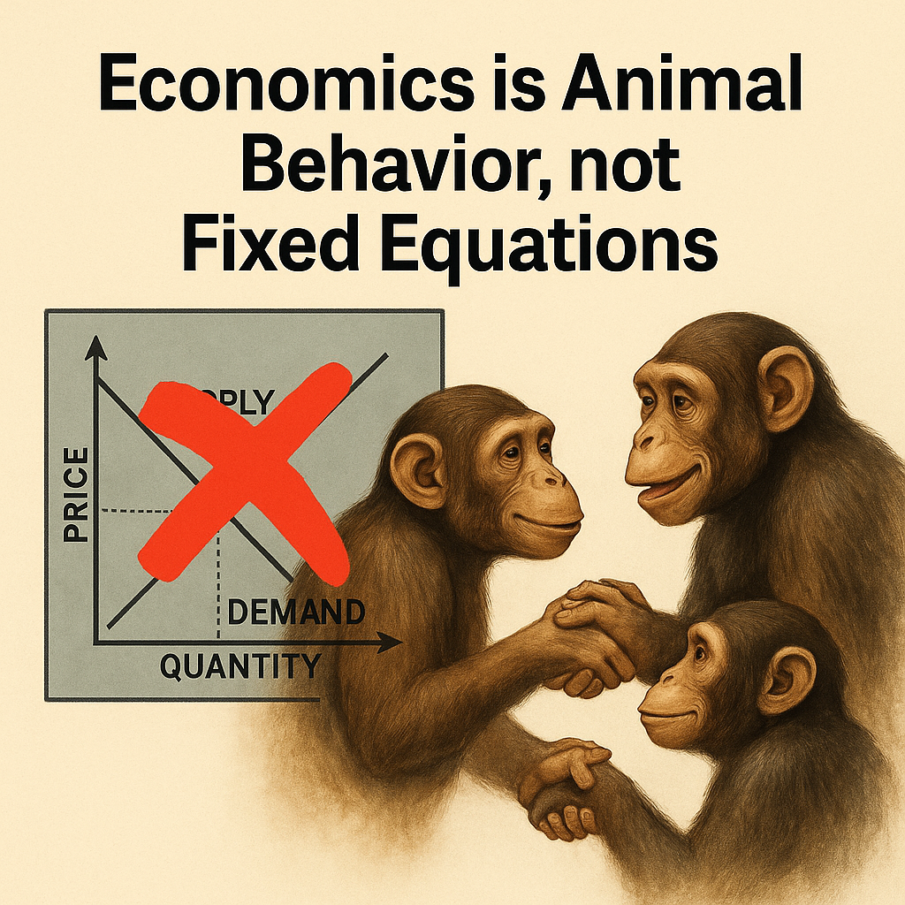

|
Egil Diau I’m rebuilding the cognitive foundation of how we understand humans. Intelligence, society, and power aren’t mysteries—they are structured expressions of cognitive architecture. This is a new theory of human reality—grounded in cognition, tested through simulation. My background spans computer science, economics, and behavioral science. I’m currently based at National Taiwan University. |

|
ResearchI'm reconstructing human cognition as a biological extension—demonstrating that core capacities like tool use, cooperation, fairness, and political strategy are not uniquely human, but shared with other primates. This perspective leads us to reexamine intelligence and social cognition, redefining their boundaries through functional and comparative analysis. On this foundation, we propose a new account of society—where economy, finance and social institutions are not cultural constructs, but structured expressions of cognitive architecture. |
|  |
Rethinking Statistics and Causality: Why Mechanisms Cannot Be Inferred from
Data Distributions
Egil Diau Zenodo, 2025 project page / Zenodo Persistent failures of statistical and causal inference to match real-world behavior across disciplines reveal a deeper limitation: mechanisms cannot be recovered from data distributions. These mismatches motivate a revisit of both paradigms, showing that statistical inference collapses into geometric alignment, while causal inference extends the same error by conflating probability with causality. |
|  |
Power as Relative Position: A Foundational Theory of Systemic
Asymmetry
Egil Diau Zenodo, 2025 project page / Zenodo Existing accounts of power are fragmented, often tied to traits, norms, or institutions. We propose a unified system theory of power: relative position in a system. This definition unifies biology, psychology, and system dynamics, yielding five lemmas that explain why power accumulates, converges, and endures. |
|  |
Rethinking Human Culture: Cognitive Mechanisms and Cross-Species
Continuities
Egil Diau Zenodo, 2025 project page / Zenodo Culture isn’t uniquely human. Chimpanzees and orcas show rich cultural behaviour, yet traditional theories frame culture as symbolic, human-only, and vague. We replace this with a unified, testable framework that explains stability, variation, and complexity across all cultural systems, grounded in two continuous cognitive spectra. |
|  |
Rethinking Social Cognition: Power, Status, and the Myth of
Mindreading
Egil Diau Zenodo, 2025 project page / Zenodo Theory of Mind is conceptually vague and empirically unreliable. Both humans and other social animals show high error rates in mental state inference, suggesting it reflects memory-based social inference rather than true mindreading. We argue that, in contrast, tracking status and navigating power are robust, consistent, and cross-species—offering a stronger foundation for understanding social cognition. |

|
Rethinking Human Cognition: A Comparative Framework Bridging Biological
Roots and Social Complexity
Egil Diau Zenodo, 2025 project page / Zenodo Most theories treat morality, politics, and cooperation as uniquely human inventions. We argue, instead, that these capacities are structured extensions of cognitive functions shared with other primates. To support this view, we propose a comparative framework—organized into six core domains—that bridges biological roots and social complexity, offering a new foundation for cognitive science, social theory, and computational modeling. |

|
Finance as Extended Biology: Reciprocity as the Cognitive Substrate of
Financial Behavior
Egil Diau arXiv, 2025 project page / arXiv Finance is often traced to institutional design or cultural invention. We argue instead that it originates in the same behavioral substrate as economic exchange: the fundamental logic of reciprocity. Trade—commonly seen as finance’s starting point—is the canonical form of reciprocity, from which credit, insurance, token exchange, and investment emerge as structured extensions. |

|
Rethinking Economics: From Classical Assumptions to Cognitive
Reality
Egil Diau Zenodo, 2025 project page / Zenodo Modern economics inherited its form from eighteenth-century moral philosophy. Yet many of its core ideas—rational agency, self-interest, and equilibrium—were historical inventions, not empirical facts. To address this, we re-examine seven foundational myths and rebuild the field on cognitive and behavioural reality. |
|  |
The Cognitive Foundations of Economic Exchange: A Modular Framework
Grounded in Behavioral Evidence
Egil Diau arXiv, 2025 project page / arXiv Prevailing accounts trace the origins of economic exchange to barter or symbolic trust—a framing that places its roots in uniquely human invention. We overturn this assumption, proposing instead that economic exchange originates in reciprocity: a social behavior shared with other social animals and sustained by three minimal, simulateable mechanisms—individual recognition, reciprocal credence, and cost–return sensitivity. |